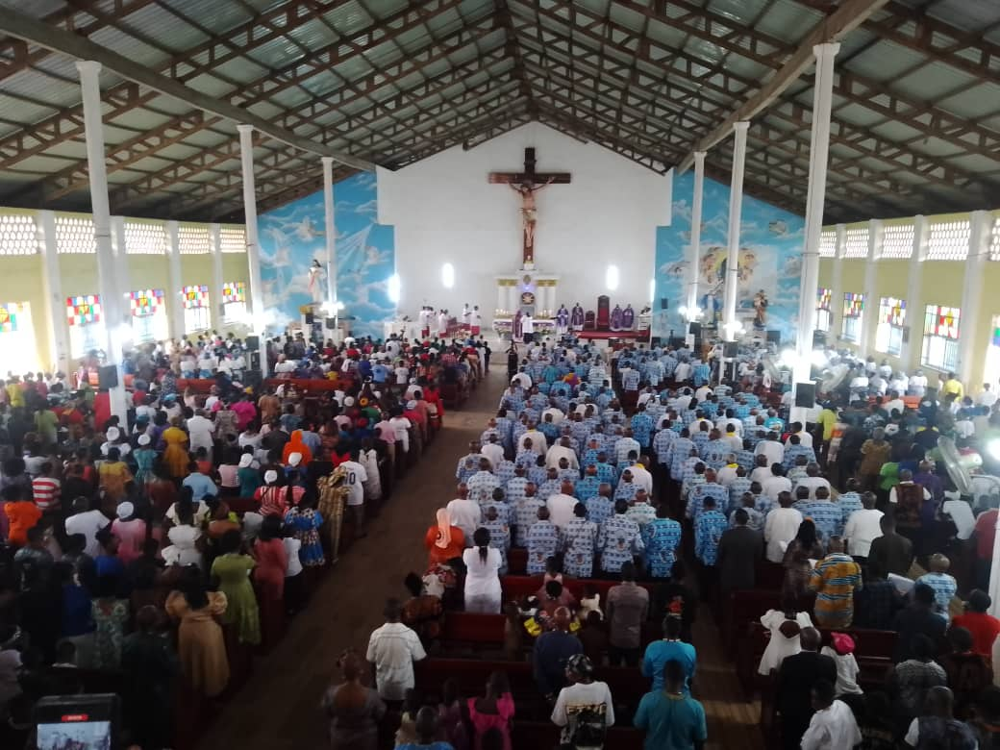

Wednesday · 5 August
The Eighteenth Week in Ordinary Time
A parish on Holy Ground.
St. John of God Parish — where the sick are served and the faithful gathered.
Every day the Church keeps a colour, a season, and a company of saints. Our doors, and this page, keep them with her — so that whenever you arrive, you arrive in time.

Saint of the Day
Our Lady of the Snows
Dedication of the Basilica of St Mary Major — a memorial of the Blessed Virgin.
“Labour without stopping; do all the good you can while you still have the time.”
St. John of God · Patron of the Sick
i.
Grow in the Faith
Scripture
The Holy Bible, daily
God speaks through His Word — strengthening, guiding, consoling us in every circumstance. Make a habit of the daily readings alongside the parish.
Read the Bible online →
Doctrine
The Catechism, unhurried
The Catechism of the Catholic Church sets out the faith clearly and completely. Read a little, often, and understand what the Church believes and why.
Read the Catechism online →